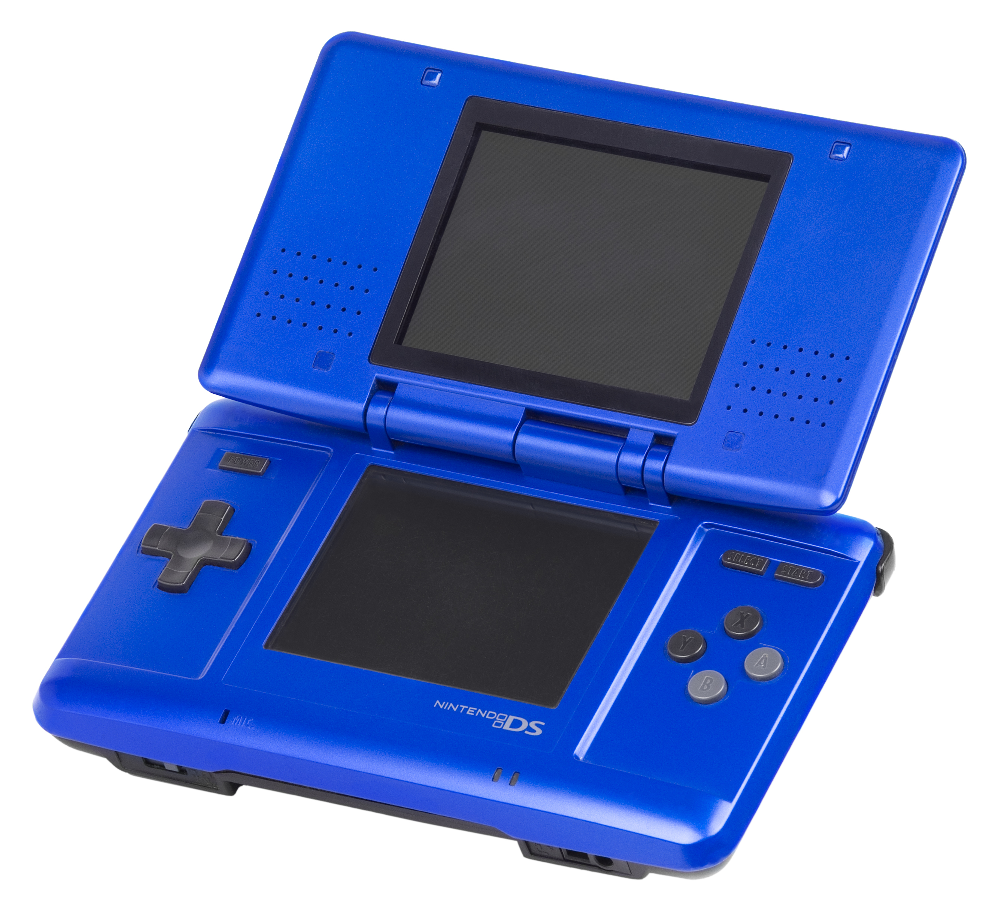
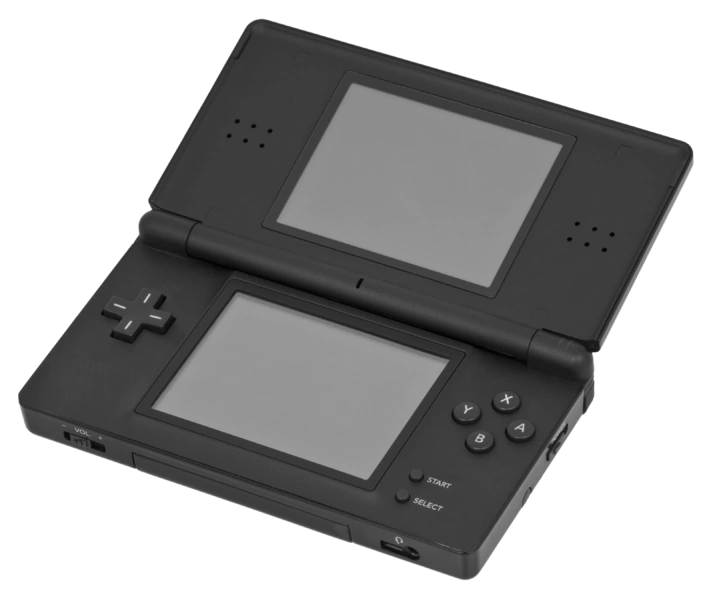
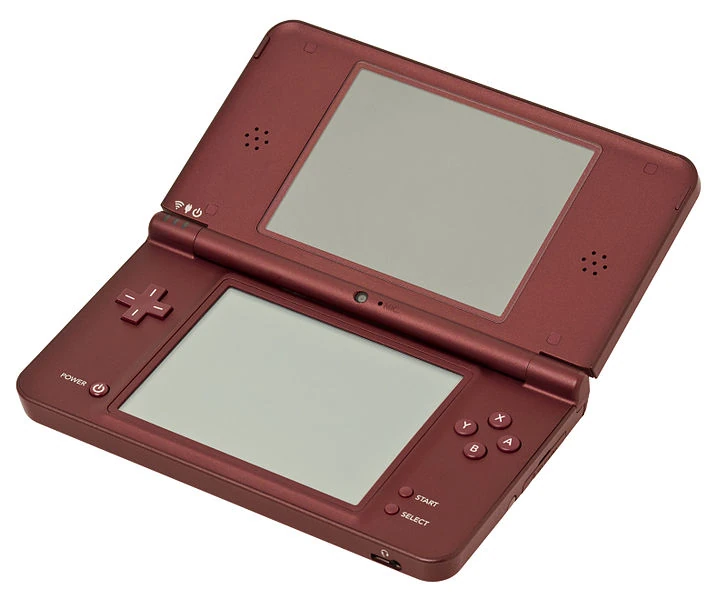

<div class="about-content-item">
  <div class="about-content-item-text">
    <h1 class="title">About Us</h1>
    <p>
      Nintendo of America is a subsidiary of Nintendo Co., Ltd., a multinational
      video game company based in Japan. The company was founded in 1889 as a
      manufacturer of playing cards, and it later began producing toys and
      games. In the 1970s, Nintendo began developing electronic games, and it
      became a major player in the video game industry with the launch of the
      Nintendo Entertainment System (NES) in 1985.
    </p>
    <p>
      Today, Nintendo is known for its popular game franchises, including Super
      Mario Bros., The Legend of Zelda, and Pokémon. The company has also
      released several successful gaming consoles, such as the Game Boy,
      Nintendo DS, Wii, and Switch.
    </p>
    <p>
      At Nintendo of America, we are dedicated to creating and delivering
      innovative and engaging entertainment experiences for our fans. We strive
      to create games that are fun for everyone, regardless of age or skill
      level. Our goal is to bring people together through the power of play.
    </p>
  </div>
  
  
  
</div>
